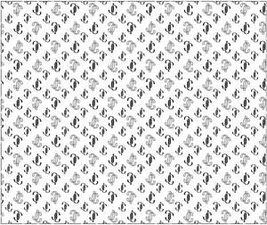

Trade Mark Journal No.2025/022 30 May 2025
UK00004202879 13 May 2025 (18,24,25,28)

The mark is a portion of a repeating pattern which repeats the subject matter depicted in the representation without modification, save for the number of repeats displayed
- Class 18
- Handbags, travelling bags, weekend bags, trunks, trunks for storing shoes, purses, wallets, clutch bags, travel wallets, luggage tags, luggage label holders, cosmetic bags, make-up bags, vanity bags, vanity cases not fitted, pouches, carrying cases, bags, shoe bags, textile shopping bags, backpacks, garment bags, beach bags, briefcases, suitcases, attaché cases; cases of leather or leather board or imitation leather; key cases, key bags, key wallets; card cases; card holders, credit card holders, debit card holders, bank card holders, business card cases; document cases; hat boxes made of leather or imitations of leather; parasols, umbrellas, walking sticks; laces (leather); leashes; collars and leads for animals; garments and clothing for pets.
- Class 24
- Towels; bath linen; face towels of textile; napkins or tissues of textile for removing make-up; handkerchiefs of textile; bed linen; bed spreads; mattress covers, pillow cases, quilts, sheets; table linen, table napkins, table runners, table mats, table cloths; travelling rugs; furniture covers; shower curtains; fabric for boots and shoes; lingerie fabric.
- Class 25
- Clothing, footwear and headgear; headbands, turbans; visors being headwear; scarves; gloves, hats, belts, swimming hats; raincoats, hosiery, sashes for wear, wedding dresses, stoles of imitation fur, muffs of imitation fur, ear muffs, hats of imitation fur, coats of imitation fur; kaftans; swimwear; underclothing; outerclothing; slippers.
- Class 28
- Golf bags; golf club head covers; cases and bags adapted for sporting articles; golf club bags; golf club covers.
J. Choo Limited
Representative: Venner Shipley LLP